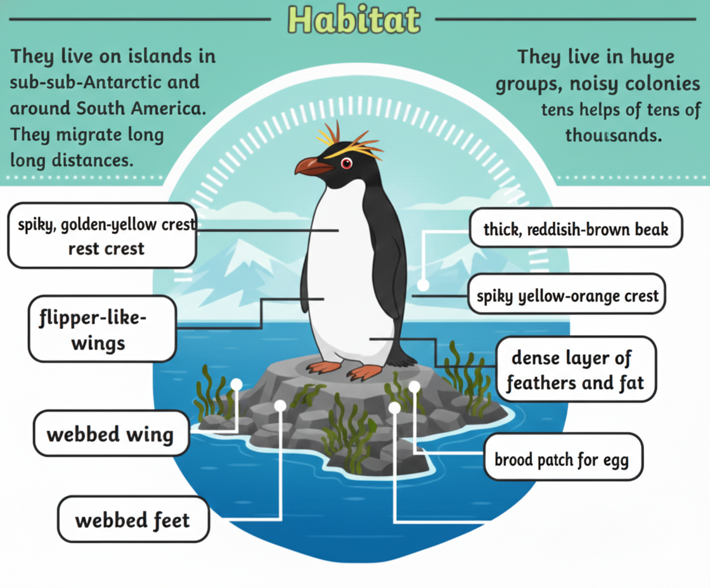
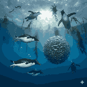

About Northern Rockhopper Penguins

Northern Rockhopper penguins are known for their bright yellow crest feathers and striking red eyes. They are slightly smaller but more colorful compared to their southern relatives.
Habitat

Northern Rockhopper penguins live on islands in the South Atlantic and Indian Oceans, including Tristan da Cunha and Gough Island. They prefer rocky cliffs and coastal areas.
Diet

Their diet mainly consists of krill, squid, and small fish. They are energetic swimmers and skilled divers while hunting for food.
Interesting Facts
- They have long, dramatic yellow crest feathers.
- They hop across rocky terrain instead of sliding.
- They breed in large colonies on steep cliffs.
- They are classified as an endangered species.